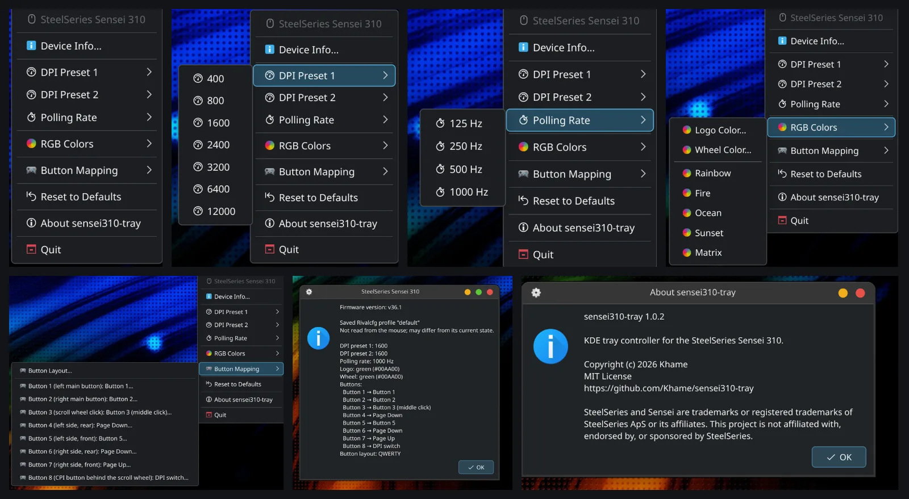

Programs
| Program | Version | Release date | Description | Code and documentation | Screenshot |
|---|---|---|---|---|---|
| sensei310-tray | 1.0.3_2 | 2026-11-10 | Controls the SteelSeries Sensei 310 mouse. The KDE tray menu lets you change DPI, polling rate, lighting and button mappings. It's written in Rust and uses rivalcfg to control the mouse. License: MIT. | GitHub ↗ |  |
On Void, install it from my repository. To build it yourself, follow the README.
Packages
Programs by other authors that I build and package for Void Linux. These are not official Void Linux packages.
| Package | Version | Release date | Description | Links |
|---|---|---|---|---|
| asusctl | 6.5.0.20261031_11 | 2026-10-26 | asusctl for ASUS laptops. The asusd service runs under runit. An optional KDE Plasma widget is also available. | README ↗ Upstream ↗ |
| doublecmd | 1.2.9_2 | 2026-10-31 | Double Commander built for Void, with the Qt5 interface. | README ↗ Upstream ↗ |
| rivalcfg | 4.17.0_6 | 2026-11-07 | Configure SteelSeries mice from the terminal. The package includes udev rules for Void. | README ↗ Upstream ↗ |
Installation
Add the repository:
sudo sh -c 'echo "repository=https://khame.github.io/void-packages/" > /etc/xbps.d/10-khame.conf' sudo xbps-install -S
35:2b:06:7c:52:04:76:b1:4a:de:a0:8b:49:9c:e2:66 XBPS will ask to import the repository key. Compare its fingerprint with the one above, then confirm. Public key: Khame-void-repo.pub.
You can work the fingerprint out yourself from the published key:
curl -fsSO https://khame.github.io/void-packages/Khame-void-repo.pub ssh-keygen -E md5 -lf <(ssh-keygen -i -m PKCS8 -f Khame-void-repo.pub)
The result should match the fingerprint above. It shows the fingerprint and the key belong together, though both come from the same site.
Install each package separately:
sudo xbps-install asusctl
sudo xbps-install doublecmd
sudo xbps-install rivalcfg
sudo xbps-install sensei310-tray
sensei310-tray needs KDE Plasma and kdialog. rivalcfg is installed with it. For mouse access setup, see the rivalcfg README (udev rules and the plugdev group).
To start asusd and install the Plasma widget, see the asusctl README.
Updates: sudo xbps-install -Su
Remove the repository
To stop using this repository:
sudo rm /etc/xbps.d/10-khame.conf sudo xbps-install -S
Installed packages stay on the system. Remove them separately with sudo xbps-remove package-name.
Bugs and patches
I test on my own hardware. Your setup may be different.
If something doesn’t work, open an issue in the repository on GitHub. Patches are welcome as pull requests.